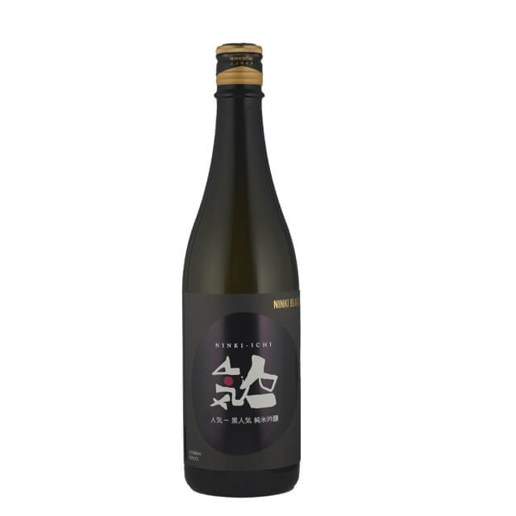
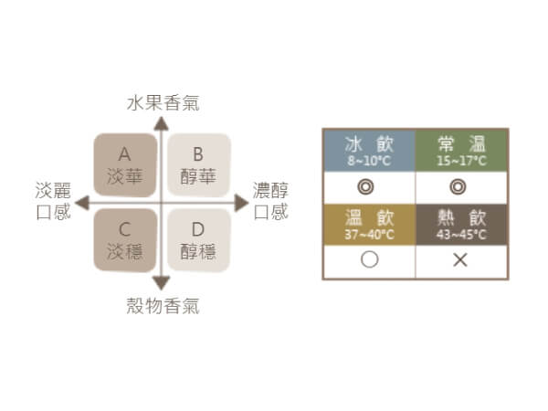

金人氣 純米大吟釀
【人気酒造】人気一 ゴールド人気純米大吟醸720ml
3,021円
香氣奔放而口味紮實，CP值高且美味的純米大吟釀。雖為辛口卻不過辛，還帶有微微甜度和輕快的尾韻。曾於2012年被選為諾貝爾獎結束後派對「諾貝爾晚宴(Nobel
NightCap2012」上的酒款。
酒標色系以金色為主，創作概念為酒的熟成所花費的「時間」，在閃耀著光芒般的變化過程中幻化為最棒的「瞬間」。

黑人氣 純米吟釀
【人気酒造】人気一 黒人気純米吟醸720ml
3,021円
帶有沉穩的吟釀香，以及純米才有的口味百搭特性，做成調酒也很合適。酒標色系以黑白灰漸層呈現出飲酒之人為精心釀造好酒的美味所陶醉的模樣。
